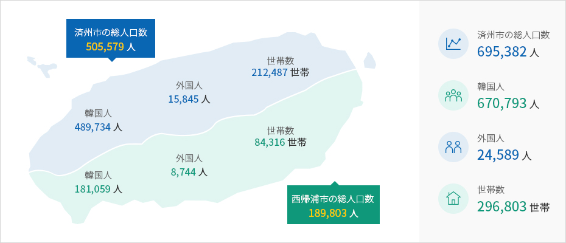

人口・経済成長率・産業構造
- Home
- 一般現況
- 行政・経済
- 人口・経済成長率・産業構造
人口
済州島の人口現況(2020年5月)



財政
- 2019年 : 5兆8,229億ウォン
- 財政自立度 : 32.9%
※ 出所・関連リンク : 済州特別自治道 (http://www.jeju.go.kr/jejuwnh/unesco/triple.htm)
産業
-
地域内の総生産
18兆227億ウォン -
1人当たりGRDP
28,520 千ウォン (全国33,657千ウォン) -
経済成長率
4.9% -
FDI
3億ドル -
観光粗収入
5兆 5,718 億ウォン -
農業粗収入
1 兆 6,945 億ウォン -
みかん
農家数 3 万 711 戸 生産量63万1千トン -
水産業
水産物生産量 18 万 7,739 M/T 粗収入 1兆2,110億ウォン -
畜産業
畜産農家数4,918 戸 飼育頭数241万6千頭
粗収入9,925億ウォン -
輸出額
182 万ドル -
自動車登録台数
59 万 6,215 台 (1世帯当たり1.32台) -
住宅普及率
107 % (266,425戸)
※ 出所・関連リンク : 済州特別自治道 (http://www.jeju.go.kr/jejuwnh/unesco/triple.htm)
基盤施設
-
済州国際空港
-
輸送実績(2019) : 29,455,305人
- 国内線 : 27,555,827人
- 国際線 : 1,899,478人
-
輸送実績(2019) : 29,455,305人
-
済州港/国際クルーズターミナル
-
輸送実績(2019) : 1,345,802명人
- 国内線 : 1,324,099人
- 国際線 : 21,703人
-
輸送実績(2019) : 1,345,802명人
-
教育機関 331
- 大学 4 (国立大学 1, 総合大学 1, 専門大学 2)
- 大学院 2
- 国際学校 4
- 高等学校 30
- 中学校 45
- 小学校 113
- 幼稚園 123
- 分校 7
- 特殊学校 3
-
医療施設 - 926
- 総合病院 6
- 病院 8
- 療養病院 9
- 医院 439
- 歯科 216
- 漢方医院 182
- 保健所 6
- 保健支所 11
- 保健診療所 47
- 健康生活支援センター 2
-
住宅普及率 - 105.2%
- 世帯数 24万215世帯
- 住宅数 25万2644戸
-
自然休養林 - 1
- 西帰浦 治癒の森
-
自然公園 - 7ヵ所、 361㎢
- 漢拏山国立公園
- 牛島海洋道立公園
- 楸子海洋道立公園
- 西帰浦海洋道立公園
- 馬羅海洋道立公園
- 城山日出海洋道立公園
- 済州コッチャワル道立公園
-
自然休養林 - 4
- 済州チョルムル自然休養林
- 西帰浦自然休養林
- 橋来自然休養林
- プルグンオルム自然休養林
-
観光インフラ
- ゴルフ場 30ヵ所 33.6㎢
- 海水浴場 11
-
教育環境
- 国際学校 4校、生徒数 約3千9百人(2019)
- KIS Jeju
- NLCS Jeju
- BHA
- SJA JEJU
- 国際学校 4校、生徒数 約3千9百人(2019)